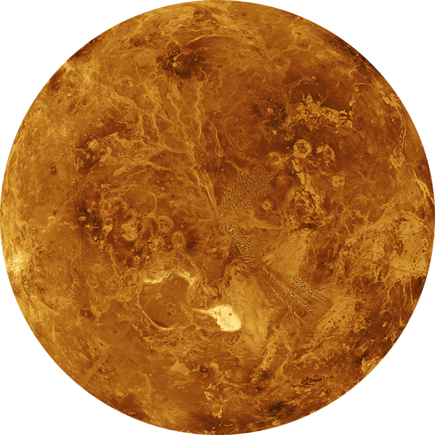

A atmosfera de Vênus é composta principalmente por dióxido de carbono (97%), com 3% de nitrogênio e traços de
outros elementos como dióxido de enxofre, vapor d'água, monóxido de carbono, argônio, hélio, neônio,
cloreto de hidrogênio e fluoreto de hidrogênio.
Vênus não possui satélites e seu núcleo é composto por ferro com um raio de cerca de 3 mil quilômetros.
A superfície de Vênus é coberta por lava e é composta principalmente de dióxido de carbono e ácido sulfúrico.
Esses elementos formam nuvens densas que causam o efeito estufa no planeta.
Vênus tem um diâmetro de 12.104 km, com um raio de 6.052 km.
A topografia de Vênus é caracterizada por grandes planícies cobertas por lava, bem como montanhas e regiões
montanhosas deformadas pela atividade geológica.
Apesar de estar mais distante do Sol do que Mercúrio, a temperatura na superfície de Vênus é maior, atingindo 482 ºC,
devido ao efeito estufa causado pelos componentes presentes no planeta.
